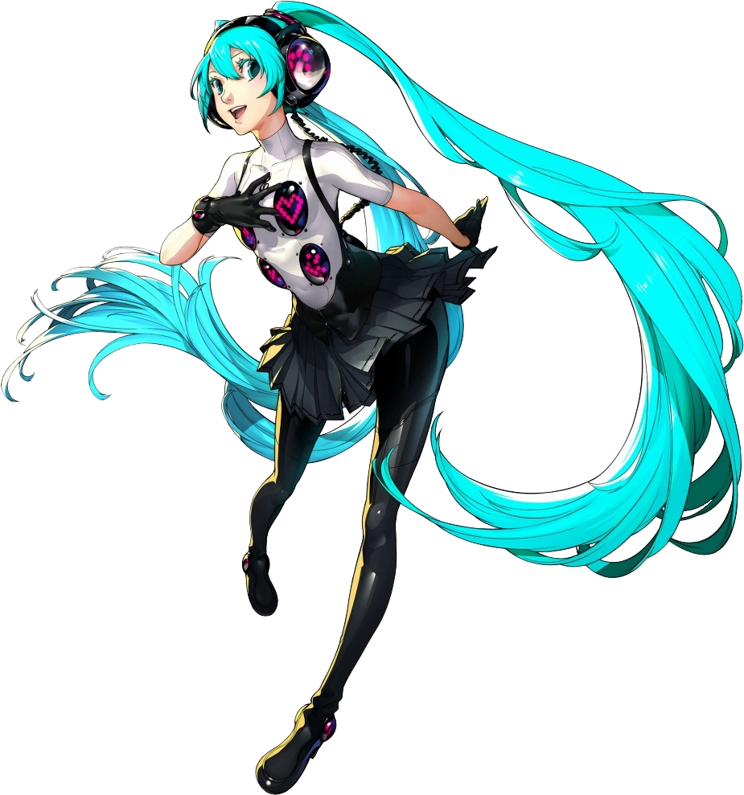

Visual Persona 4 Dancing All Night
Aparições:
Personan 4 Dancing All Night : personagem jogável (DLC) |
Design:
Miku é uma jovem adolescente com longos cabelos azuis amarrados em tranças que chegam até os
tornozelos e olhos azuis. Para sua aparição em Persona 4: Dancing All Night , ela usa um traje
especial desenhado pelo designer de personagens Shigenori Soejima que consiste em uma gola alta
branca e colante com quatro botões grandes e pretos adornados com vários ícones em um estilo simples
de pixel art de matriz de pontos . e um pequeno símbolo de clave de sol preto no centro do peito.
Ela também usa uma minissaia preta com suspensórios, luvas, botas justas e fones de ouvido com fio,
fechados na parte traseira, com várias luzes rosa na parte externa dos drivers, que são cobertos por
um invólucro hemisférico transparente em cada orelha, e parece estar conectado por meio de um cabo
enrolado à saia ou possivelmente a um reprodutor de áudio preso à cintura ou cinto.
Perfil:
Dancing All Night
Miku aparece como um personagem jogável DLC, especificamente ligado à música " Heaven feat.
Hatsune Miku (ATOLS Remix) ". Assim como Marie e Adachi, as cores de seus cabelos e olhos podem ser
personalizadas. No entanto, ao contrário dos outros personagens dos jogadores, ela não está
disponível como parceira do FEVER.
Miku é referenciado no capítulo final do Modo História, quando Kanji se lembra mal e mutila o
nome de Mikuratana-no-Kami .
Curiosidades:
Miku é o personagem estrela da série de jogos de ritmo Hatsune Miku: Project DIVA desenvolvida por Dingo, que ajudou no desenvolvimento de Persona 4: Dancing All Night , e pela Sega, a atual controladora da Atlus.
O design com o qual ela aparece em Persona 4: Dancing All Night foi originalmente criado por Shigenori Soejima para uma colaboração de Miku com a cantora Namie Amuro em seu álbum _genic lançado em 10 de junho de 2015, para o single "B Who I Want 2 B".
Como personagem DLC, ela é uma das poucas personagens jogáveis que não está envolvida na história principal de Persona 4: Dancing All Night (incluindo Marie e Tohru Adachi ), e a única personagem atualmente conhecida no jogo que não está envolvido com a série Persona ou com a franquia Megami Tensei .
Miku é o primeiro personagem convidado de uma série fora da Atlus a aparecer em um jogo Persona.
Miku também é a segunda personagem jogável a cantar sua própria música enquanto dança, a primeira foi Rise Kujikawa .
Miku é o único personagem jogável em DLC sem parceiro FEVER ou fantasias Persona Color.
A aparição de Persona 4: Dancing All Night de Miku foi posteriormente incluída como um módulo DLC em Hatsune Miku: Project DIVA X e Hatsune Miku Project DIVA Future Tone. Também foi adicionado ao jogo de arcade Project Diva em uma atualização.
Em Tokyo Mirage Sessions ♯FE , a primeira história paralela de Tiki é chamada "I'll Tiki-Tiki You (For Reals)". Esta é uma referência a uma música popular de Hatsune Miku, "I'll Miku-Miku You (For Reals)" (título em japonês: Miku Miku Ni Shite Ageru), que foi originalmente lançada no site de vídeos japonês Nico Nico Douga em 20 de setembro de 2019. 2007. A música foi criada pelo produtor ika e se tornou um dos primeiros grandes sucessos de Miku.
Ulta-loid também é uma paródia do Vocaloid, o software do motor de Miku.
Miku é o único personagem da série Project Diva que está em qualquer jogo Persona.